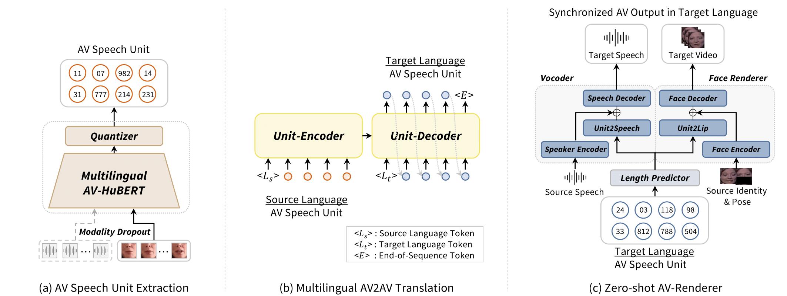

AV2AV
Direct Audio-Visual Speech to Audio-Visual Speech Translation
with Unified Audio-Visual Speech Representation
Jeongsoo Choi*, Se Jin Park*, Minsu Kim*, Yong Man Ro
School of Electrical Engineering, KAIST, South Korea
CVPR 2024 (Highlight)
[Paper] [Code]Abstract. This paper proposes a novel direct Audio-Visual Speech to Audio-Visual Speech Translation (AV2AV) framework, where the input and output of the system are multimodal (i.e., audio and visual speech). With the proposed AV2AV, two key advantages can be brought: 1) We can perform real-like conversations with individuals worldwide in a virtual meeting by utilizing our own primary languages. In contrast to Speech-to-Speech Translation (A2A), which solely translates between audio modalities, the proposed AV2AV directly translates between audio-visual speech. This capability enhances the dialogue experience by presenting synchronized lip movements along with the translated speech. 2) We can improve the robustness of the spoken language translation system. By employing the complementary information of audio-visual speech, the system can effectively translate spoken language even in the presence of acoustic noise, showcasing robust performance. To mitigate the problem of the absence of a parallel AV2AV translation dataset, we propose to train our spoken language translation system with the audio-only dataset of A2A. This is done by learning unified audio-visual speech representations through self-supervised learning in advance to train the translation system. Moreover, we propose an AV-Renderer that can generate raw audio and video in parallel. It is designed with zero-shot speaker modeling, thus the speaker in source audio-visual speech can be maintained at the target translated audio-visual speech. The effectiveness of AV2AV is evaluated with extensive experiments in a many-to-many language translation setting.
- In each direction of language translation, a single unified multilingual model was used.
Contents
Model Overview

Figure. (a) We extract unified audio-visual speech representations using multilingual trained AV-HuBERT. The speech features are discretized into audio-visual speech units through quantization and treated as pseudo text. (b) By using audio-visual speech units, we translate between multilingual languages using a transformer encoder-decoder model. (c) The audio speech and visual speech are generated in parallel from the translated audio-visual speech units by using the proposed Zero-shot AV-Renderer. The renderer can perform in a zero-shot setting so that we can keep the speaker identity the same before and after the translation.
Audio-Visual Speech to Audio-Visual Speech Translation
English-X Translation Results on LRS3 dataset
| Language | Source (transcription) |
AV2AV (ASR transcribed) |
|---|---|---|
English -> Spanish |
that means at some point it's going to be your problem too |
esto significa que en algún momento será también su problema |
English -> French |
i understand how this could happen |
je comprends comment ça peut arriver |
English -> Italian |
don't we already know the consequences of a changing climate |
non sappiamo già le conseguenze di un candiamento climatico |
English -> Portuguese |
she never had to duck and cover under her desk at school |
ela nunca tinha que sentar e cobrir sobre sua primeira mesa |
X-English Translation Results on mTEDx dataset
| Language | Source (transcription) |
AV2AV (ASR transcribed) |
|---|---|---|
Spanish -> English |
pero lejos de todo esto, que me sirve muchísimo y de lo que estoy orgulloso, creo que lo más me gusta, con lo que más disfruto con mi trabajo, es cuando escribo algo |
but away from all this that serves me very much and what is very proud of what i most like what i most enjoy with my work is i write something |
French -> English |
et puis il est tombé malade |
and then he was sick |
Italian -> English |
e, da questo punto di vista, c’è corrispondenza |
and from this point of view there is correspondence |
Portuguese -> English |
a technologia na saúde não é nova |
technology in health is not new |
Comparison with Cascaded System
| Language | Source (transcription) |
Cascaded (ASR transcribed) |
AV2AV (ASR transcribed) |
|---|---|---|---|
English -> Spanish |
that means at some point it's going to be your problem too |
esto significa que en algún momento será su problema también |
esto significa que en algún momento será también su problema |
Portuguese -> English |
além disso, a gente ganhou um apoio muito grande da mídia |
in addition, we have gained a very large support from the media |
in addition, we received a very large support from the media |